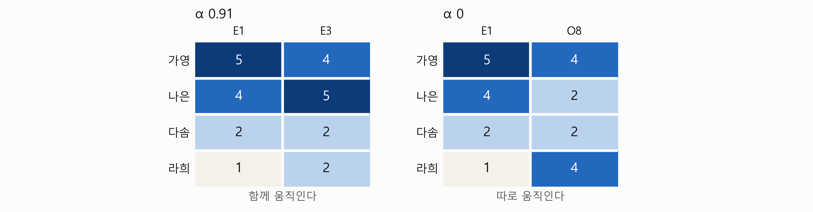
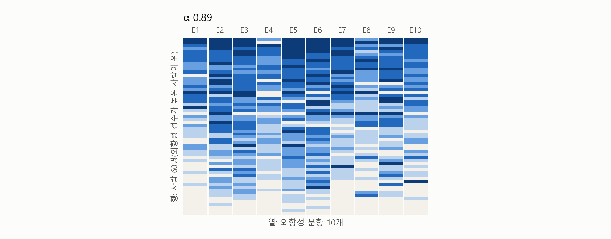
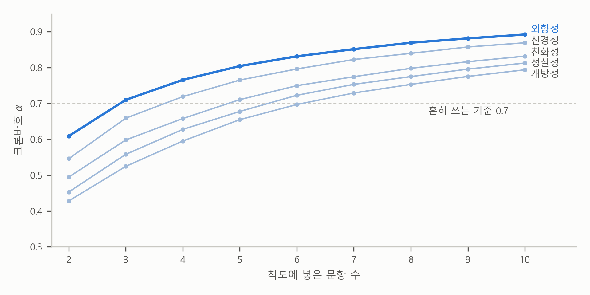

3. 함께 움직이는가 — 크론바흐 \(\alpha\)와 문항 수#
보고서의 요약은 이렇게 시작합니다.
다섯 개의 성격 척도의 신뢰도(크론바흐 \(\alpha\))는 0.79 ~ 0.89로, 흔히 쓰는 기준 0.7을 모두 넘는다.
해석에는 “외향성 0.89는 외향성 문항 하나에 외향적이라고 답한 사람이 다른 외향성 문항에도 대개 외향적이라고 답했다는 뜻이다”라는 설명이 붙어 있습니다. 설문 연구의 보고서에서 가장 자주 만나는 숫자가 이 크론바흐 \(\alpha\)입니다. 미리 답부터 말하면, 크론바흐 \(\alpha\)는 척도의 문항들이 얼마나 함께 움직이는지를 나타내는 숫자입니다. 1에 가까울수록 함께 움직인다는 뜻이고, 문항이 같은 것을 물을수록, 그리고 문항이 많을수록 커집니다. 이 절에서는 가공의 네 사람과 실제 응답자 60명의 답을 그림으로 보면서 \(\alpha\)가 어떤 숫자인지 이해하고, 문항 수에 따라 \(\alpha\)가 어떻게 달라지는지, 기준 0.7은 어디서 왔는지, 그리고 \(\alpha\)가 높아도 알 수 없는 것이 무엇인지를 차례로 봅니다.
같은 실력을 묻는 문제라면 함께 움직인다#
시험 문제와 실력으로 돌아가 봅시다. 수학 시험 문제 스무 개가 모두 수학 실력을 묻는다면, 수학을 잘하는 학생은 대부분의 문제를 맞히고 못하는 학생은 대부분 틀릴 것입니다. 한 문제를 맞힌 학생은 다른 문제도 대개 맞히고, 한 문제를 틀린 학생은 다른 문제도 대개 틀립니다. 그런데 수학 시험지에 엉뚱하게 인기 가수의 노래 제목을 묻는 문제가 하나 섞여 있다면 어떨까요? 이 문제를 맞히는지는 수학 실력과 상관이 없으니, 수학 문제를 맞힌 학생이 이 문제도 맞힐지는 알 수 없습니다.
설문 문항도 같습니다. 앞 절의 표 2-1에서 E1에 높게 답한 사람이 E3에도 높게 답한 것을 보았습니다. 여기서는 가공의 네 사람으로 더 자세히 보겠습니다. 표 3-1은 네 사람이 문항 세 개에 고른 답입니다. E1과 E3은 외향성 문항이고 O8은 개방성 문항이니, O8이 수학 시험지에 섞인 노래 제목 문제에 해당합니다.
표 3-1. 네 사람의 답(가공의 예)
E1 “나는 모임의 분위기를 띄우는 사람이다” |
E3 “나는 사람들 사이에서 편안하다” |
O8 “나는 어려운 낱말을 쓴다” |
|
|---|---|---|---|
가영 |
5 |
4 |
4 |
나은 |
4 |
5 |
2 |
다솜 |
2 |
2 |
2 |
라희 |
1 |
2 |
4 |
그림 3-1은 이 표의 답을 색으로 칠한 것입니다. 하나의 행이 한 사람이고 하나의 열이 한 문항이며, 답이 높을수록 색이 진합니다. 왼쪽 패널에는 E1과 E3을, 오른쪽 패널에는 E1과 O8을 나란히 놓았습니다. 패널마다 왼쪽 위에 적힌 “α 0.91”과 “α 0”은 다음 소절에서 설명합니다.

그림 3-1. 네 사람의 답과 크론바흐 \(\alpha\)(가공의 예). 하나의 행이 한 사람, 하나의 열이 한 문항이고, 답이 높을수록 색이 진하다. 값은 표 3-1과 같다.
왼쪽 패널에서는 행마다 두 칸의 색이 비슷합니다. 가영과 나은의 행은 두 칸이 다 진하고, 다솜과 라희의 행은 두 칸이 다 옅습니다. E1에 높게 답한 사람은 E3에도 높게 답했고, 낮게 답한 사람은 E3에도 낮게 답했습니다. 이것을 두 문항의 답이 함께 움직인다고 합니다. 이 장에서는 줄여서 문항이 함께 움직인다고 하겠습니다. 통계에서는 두 문항의 답 사이에 상관이 있다고 말합니다.
오른쪽 패널에서는 그렇지 않습니다. E1 열은 위에서 아래로 차례로 옅어지는데, O8 열은 위와 아래가 진하고 가운데가 옅습니다. E1에 가장 높게 답한 가영도, 가장 낮게 답한 라희도 O8에는 똑같이 4를 골랐습니다. E1과 O8은 따로 움직입니다.
두 패널의 차이는 한 칸을 가려 보면 분명해집니다. 왼쪽 패널에서는 E3 칸을 가려도 E1 칸의 색으로 가린 칸의 색을 짐작할 수 있습니다. 오른쪽 패널에서는 E1 칸의 색을 알아도 가린 O8 칸의 색을 짐작할 수 없습니다.
얼마나 함께 움직이는지를 숫자로 — 상관계수와 크론바흐 \(\alpha\)#
문항들이 얼마나 함께 움직이는지는 숫자 하나로 나타낼 수 있습니다. 문항이 둘이면 상관계수(correlation coefficient)를 씁니다. 그림 3-1의 왼쪽 패널에 있는 E1과 E3의 상관계수는 0.85이고, 오른쪽 패널에 있는 E1과 O8의 상관계수는 0입니다. 상관계수는 −1에서 1 사이의 값을 가지며, 다음과 같은 성질을 지니고 있습니다.
오른쪽 패널처럼 두 문항이 따로 움직이면 0입니다.
왼쪽 패널처럼 두 문항이 함께 움직일수록 1에 가까워집니다. 한 문항에 더 높게 답한 사람이 다른 문항에도 늘 같은 간격만큼 더 높게 답한다면 1입니다.
음수이면 두 문항이 거꾸로 움직입니다. 한 문항에 높게 답한 사람이 다른 문항에는 낮게 답하는 것이고, −1에 가까울수록 그렇습니다.
그런데 상관계수는 문항 둘 사이에서만 계산할 수 있는 반면, 우리가 여기서 다루고 있는 척도는 대개 문항이 여러 개입니다. 외향성 척도의 문항 10개를 둘씩 짝지으면 상관계수가 45개나 나옵니다. 크론바흐 \(\alpha\)(Cronbach’s alpha)는 문항이 몇 개든, 그 문항들이 얼마나 함께 움직이는지를 숫자 하나로 나타냅니다. 그림 3-1의 패널 위에 적힌 숫자가 그 패널의 두 문항으로 척도를 만들었을 때의 \(\alpha\)입니다. 왼쪽은 0.91이고 오른쪽은 0입니다. \(\alpha\)도 상관계수처럼 숫자가 어떤 모습을 뜻하는지로 이해하면 됩니다.
오른쪽 패널처럼 문항들이 따로 움직이면 0입니다.
왼쪽 패널처럼 문항들이 함께 움직일수록 1에 가까워집니다. 사람마다 자기가 고른 답이 문항마다 똑같다면 1입니다. 가영은 모두 5, 라희는 모두 1을 고르는 식입니다.
문항끼리의 상관계수가 클수록, 그리고 문항이 많을수록 커집니다.
음수가 나오면 다른 문항들과 거꾸로 움직이는 문항이 섞여 있다는 신호입니다.
크론바흐 \(\alpha\)가 높다는 것#
\(\alpha\)가 높다는 것은 그림으로 말하면 이런 뜻입니다. 행을 따라 옆으로 가면 색이 비슷하고, 열을 따라 아래로 가면 색이 달라집니다. 사람들이 서로 비슷하게 답했다는 뜻이 아닙니다. 사람마다 답은 다르되, 한 사람이 여러 문항에 고른 답이 서로 비슷하다는 뜻입니다. 높게 답하는 사람은 어느 문항에나 높게 답하고, 낮게 답하는 사람은 어느 문항에나 낮게 답합니다.
그래서 어느 문항으로 줄을 세워도 사람들의 순서가 비슷합니다. 그림 3-1의 왼쪽 패널에서 E1의 답으로 줄을 세우든 E3의 답으로 세우든 가영과 나은이 앞에 서고 다솜과 라희가 뒤에 섭니다. 오른쪽 패널에서는 O8의 답으로 줄을 세우면 E1에 가장 낮게 답한 라희가 가영과 나란히 앞에 서고 나은은 뒤로 가서, 순서가 뒤섞입니다. 문항을 바꿔도 순서가 거의 그대로라면 어느 문항으로 재든 누가 높고 누가 낮은지가 비슷합니다. 문항들이 일관되게 측정한다는 것이 이런 뜻입니다.
실제 답도 같은 방법으로 볼 수 있습니다. 그림 3-2는 실제 응답자 가운데 무작위로 고른 60명이 외향성 문항 10개에 고른 답입니다. 그림 3-1의 왼쪽 패널을 사람 60명, 문항 10개로 넓힌 것입니다. 색이 진할수록 외향적이라고 답한 것이고, 사람은 외향성 점수가 높은 순서로 위에서부터 놓았습니다.

그림 3-2. 외향성 10문항의 실제 답(무작위로 고른 60명). 하나의 행이 한 사람, 하나의 열이 한 문항이고, 색이 진할수록 외향적이라고 답한 것이다.
그림에서 보듯이 위쪽 사람들의 행은 칸 10개가 거의 다 진하고, 아래쪽 사람들의 행은 거의 다 옅습니다. 한 사람이 문항 서너 개에 고른 답만 보아도 나머지 문항의 답을 대강 짐작할 수 있습니다. 문항들이 따로 움직였다면 어느 행에나 진한 칸과 옅은 칸이 아무렇게나 섞여, 위쪽 행과 아래쪽 행을 구별할 수 없었을 것입니다. 이 10개 문항의 \(\alpha\)는 0.89입니다. \(\alpha\) 0.89는 이런 모습입니다.
다만 실제 답은 가공의 예만큼 가지런하지 않습니다. 행마다 색이 다른 칸이 끼어 있고, 가운데쯤의 행은 진한 칸과 옅은 칸이 섞여 있습니다. 숫자로도 그렇습니다. 응답자 19,718명 전체로 계산하면 E1과 E3의 상관계수는 0.47이고, E1과 O8은 0.00입니다. 외향성 문항끼리의 상관계수 45개는 평균 0.45입니다. 문항 둘만 놓고 보면 가공의 예의 0.85보다 훨씬 약하게 함께 움직이는데도, 10개 문항의 \(\alpha\)는 0.89입니다. 문항이 많기 때문인데, 그 까닭은 조금 뒤에서 봅니다.
한 척도에 넣은 문항들이 같은 것을 일관되게 측정하는 정도를 그 척도의 신뢰도(reliability)라고 부르고, 크론바흐 \(\alpha\)는 신뢰도를 나타내는 가장 흔한 숫자입니다. 이름은 이 계산을 널리 알린 교육심리학자 리 크론바흐(Lee Cronbach)의 이름에서 왔습니다.
참고: 크론바흐 \(\alpha\)의 식은 이렇습니다. \(k\)는 문항 수이고, 분산은 표준편차의 제곱으로 흩어짐의 크기를 나타냅니다.
\[\alpha = \frac{k}{k-1} \left( 1 - \frac{\text{문항마다의 분산을 더한 값}}{\text{합의 분산}} \right)\]식에서 “합”은 한 사람이 문항들에 고른 답을 모두 더한 값입니다. 문항들이 함께 움직일수록 합의 분산이 커져서 \(\alpha\)가 커집니다.
\(\alpha\)가 음수로 나올 때도 있습니다. 역문항의 답을 뒤집지 않았을 때입니다. 답을 뒤집지 않은 역문항은 정문항과 거꾸로 움직입니다. 그림 3-2로 말하면 다른 열은 위쪽이 진하고 아래쪽이 옅은데, 그 문항의 열만 위쪽이 옅고 아래쪽이 진합니다. 그런 열이 섞이면 \(\alpha\)가 크게 떨어집니다. 표 3-2는 이 장의 다섯 척도에서 역문항의 답을 뒤집기 전과 뒤의 \(\alpha\)입니다.
표 3-2. 역문항의 답을 뒤집기 전과 뒤의 크론바흐 \(\alpha\)
척도 |
역문항 수 |
뒤집기 전 |
뒤집은 뒤 |
|---|---|---|---|
외향성 |
5 |
−0.40 |
0.89 |
신경성 |
2 |
0.71 |
0.87 |
친화성 |
4 |
−0.03 |
0.83 |
성실성 |
4 |
0.05 |
0.81 |
개방성 |
3 |
0.27 |
0.79 |
주: 50문항 모두 답한 19,718명. 척도마다 10문항.
표에서 보듯이 외향성은 10개 문항 가운데 5개가 역문항이라서, 답을 뒤집지 않으면 \(\alpha\)가 −0.40으로 음수가 됩니다. 답을 뒤집으면 0.89입니다. 다만 역문항이 두 개뿐인 신경성은 답을 뒤집지 않아도 0.71로 기준 0.7을 넘습니다.
💡 팁: \(\alpha\)가 0 근처이거나 음수로 나오면 역문항의 답을 뒤집었는지부터 확인하세요. 다만 신경성처럼 답을 뒤집지 않아도 기준 0.7을 넘는 척도가 있습니다. 기준을 넘었는지만 확인하면 이 실수를 놓치므로, 답을 제대로 뒤집었는지는 \(\alpha\)가 아니라 채점 키로 확인해야 합니다.
문항이 많을수록 — 운이 상쇄된다#
크론바흐 \(\alpha\)를 키우는 것은 문항끼리 함께 움직이는 정도만이 아닙니다. 문항의 수도 \(\alpha\)를 키웁니다. 그림 3-3은 다섯 척도마다 10문항 가운데 몇 개만 골라 척도를 만들었을 때의 \(\alpha\)입니다. 같은 수의 문항을 고르는 방법이 여러 가지라, 무작위로 300번 골라 평균했습니다.

그림 3-3. 척도에 넣은 문항 수와 크론바흐 \(\alpha\). 척도마다 10문항 가운데 그 수만큼 무작위로 300번 골라 평균했다(10문항은 보고서의 \(\alpha\)).
그림에서 보듯이 다섯 선이 모두 오른쪽으로 갈수록 올라갑니다. 외향성은 문항 2개로 만들면 \(\alpha\)가 0.61이고, 3개면 0.71, 5개면 0.80, 10개면 0.89입니다. 같은 외향성 문항인데 개수만 늘려도 \(\alpha\)가 커집니다. 앞에서 외향성 문항끼리의 상관계수가 평균 0.45인데도 10개 문항의 \(\alpha\)가 0.89였던 것이 이 때문입니다.
시험으로 생각하면 자연스럽습니다. 시험을 보다 보면 모르는 문제를 찍어서 맞히기도 하고, 아는 문제를 실수로 틀리기도 합니다. 문제가 두 개뿐인 시험이라면 한 문제를 찍어서 맞힌 것만으로 점수가 크게 달라집니다. 문제가 스무 개라면 찍어서 맞힌 문제도 있고 실수로 틀린 문제도 있어서 둘이 서로 상쇄됩니다. 그래서 문제가 많을수록 점수에서 운의 몫은 줄고 실력의 몫이 커집니다.
설문 문항도 문장을 오해하거나 그날 기분에 따라 답한 몫이 문항마다 다르게 들어 있어서, 문항이 많을수록 그 몫이 서로 상쇄됩니다. 그림 3-2에서 행마다 끼어 있던 색이 다른 칸에 그 몫이 들어 있습니다. 칸 하나만 보면 그 사람을 잘못 짐작할 수 있지만, 그 행의 칸 10개를 함께 보면 진한 행인지 옅은 행인지 분명합니다.
그림에서 하나 더 볼 것은 선이 올라가는 폭이 점점 줄어든다는 점입니다. 외향성은 2개에서 3개로 늘릴 때 0.10이 오르지만, 9개에서 10개로 늘릴 때는 0.01밖에 오르지 않습니다. 문항을 늘리면 \(\alpha\)는 오르지만, 설문이 길어지면 답하는 사람이 지쳐 대충 답하기 쉽다고 흔히 말합니다. 그래서 설문을 만드는 사람은 설문의 길이와 \(\alpha\)를 함께 따져 문항 수를 정합니다.
반대로 이 그림은 문항이 적은 척도의 \(\alpha\)가 낮게 나오기 쉽다는 것도 보여 줍니다. 개방성은 5문항이면 0.65로 기준 0.7에 못 미칩니다. 문항 2 ~ 3개짜리 척도의 \(\alpha\)가 0.6대라면 문항이 나빠서라기보다 문항이 적어서일 수 있습니다.
\(\alpha\)가 아주 높을 때도 한 번 생각해 볼 것이 있습니다. 문항이 많기만 해도 \(\alpha\)는 오르고, 거의 같은 문장을 말만 바꿔 여러 번 물어도 \(\alpha\)는 오릅니다. 그런 척도에는 사람들이 일관되게 답하지만, 개념의 좁은 한 면만 되풀이해 묻고 있을 수 있습니다.
기준 0.7은 어디서 왔나#
보고서는 \(\alpha\)가 “흔히 쓰는 기준 0.7”을 넘는다고 썼습니다. 0.7은 설문 연구에서 가장 널리 쓰이는 기준이지만, 0.7에서 무언가가 갑자기 바뀌는 이론적인 경계가 있는 것은 아닙니다. 관행입니다.
이 기준의 출처로는 흔히 심리측정학자 넌널리(Nunnally)의 1978년 교과서가 인용됩니다. 그런데 이 교과서가 말한 것은 연구의 초기 단계라면 0.7 정도로도 충분하다는 것이었고, 모든 연구가 넘어야 할 최소 기준이라는 뜻은 아니었다는 지적이 있습니다(Lance 외, 2006)[1]. 출처의 말이 옮겨지는 동안 “0.7을 넘으면 된다”로 굳은 셈입니다.
그러니 보고서의 \(\alpha\)를 볼 때는 이렇게 생각하면 됩니다. 0.7을 넘었다는 것은 이 문항들로 만든 점수가 꽤 일관된다는 뜻이지, 측정에 문제가 없다는 보증은 아닙니다. 0.7에 조금 못 미친다고 해서 척도를 버릴 일도 아닙니다. 문항이 몇 개인지, 다른 연구에서 같은 척도의 \(\alpha\)가 얼마였는지를 함께 봅니다. 이 장의 다섯 척도는 문항이 10개씩이고 \(\alpha\)가 0.79 ~ 0.89이니, 응답자들이 문항들에 꽤 일관되게 답했다고 말할 수 있습니다.
문항 하나를 빼면#
보고서에는 없지만, 설문 분석을 맡기면 AI가 문항마다 “그 문항을 빼면 \(\alpha\)가 얼마가 되는가”를 함께 보여 주는 경우가 많습니다. 다른 문항들과 따로 움직이는 문항이 섞여 있으면, 그 문항을 뺐을 때 \(\alpha\)가 오히려 오르기 때문입니다. 수학 시험지에서 노래 제목 문제를 빼는 것과 같습니다. 이 장의 50문항 가운데 빼면 \(\alpha\)가 오르는 문항은 네 개이고, 표 3-3이 그 네 문항입니다.
표 3-3. 빼면 크론바흐 \(\alpha\)가 오르는 문항
척도 |
문항 |
10문항의 \(\alpha\) |
그 문항을 뺀 9문항의 \(\alpha\) |
|---|---|---|---|
신경성 |
N4 “나는 기분이 가라앉는 일이 드물다” |
0.869 |
0.875 |
친화성 |
A1 “나는 다른 사람을 별로 걱정하지 않는다” |
0.832 |
0.833 |
친화성 |
A3 “나는 사람들을 모욕한다” |
0.832 |
0.835 |
개방성 |
O9 “나는 이것저것 곰곰이 생각한다” |
0.794 |
0.797 |
주: 50문항 모두 답한 19,718명. A1, A3, N4는 역문항(뒤집은 답으로 계산).
표에서 보듯이 네 문항 모두 빼도 \(\alpha\)는 0.001 ~ 0.006 오를 뿐입니다. 이 정도 차이라면 문항을 뺄 까닭이 없습니다. 이미 널리 쓰이는 척도에서 문항을 빼면 척도의 뜻이 조금 달라지고, 같은 척도를 쓴 다른 연구와 숫자를 비교하기도 어려워집니다. 문항을 빼는 것은 \(\alpha\)가 크게 오르고, 그 문항의 문장에도 문제가 있어 보일 때(예를 들어 번역이 어색하거나 응답자가 다르게 이해했을 때) 생각할 일입니다. 네 문항 가운데 N4와 O9는 다음 절에서 다시 만납니다.
💡 팁: 척도를 만든 뒤에는 AI에게 이렇게 요청해 보세요. “척도마다 크론바흐 알파(Cronbach’s alpha)를 계산하고, 문항별로 문항 제거 시 알파(alpha if item deleted)를 표로 보여 줘. 빼면 알파가 크게 오르는 문항이 있으면 따로 알려 줘.” 그런 문항이 보이면 빼기 전에 채점 키부터 다시 확인합니다. 답을 뒤집지 않은 역문항일 수 있습니다.
일관되게 답했다는 것과 맞게 측정했다는 것#
이제 보고서 요약의 셋째 줄을 절반은 이해할 수 있습니다. 두 결과 가운데 하나가 이 절의 \(\alpha\)이고, 다른 하나인 요인분석은 다음 절에서 봅니다.
두 결과는 응답자들이 같은 성격을 묻는 문항들에 일관되게 답했다는 뜻이다. 척도가 실제 성격을 맞게 측정하는지는 이 분석으로 알 수 없다.
늘 2kg 더 나오는 체중계를 생각해 보세요. 같은 사람이 몇 번을 올라가도 매번 같은 숫자가 나오니 일관됩니다. 하지만 그 숫자는 실제 몸무게가 아닙니다. 일관되게 측정하는 것과 맞게 측정하는 것은 다른 일입니다. 크론바흐 \(\alpha\)가 말해 주는 것은 일관되게 측정하는지뿐입니다. 측정하려던 것을 제대로 측정하는지를 타당도(validity)라고 부릅니다.
외향성 척도의 타당도를 따지려면 문항들끼리의 관계가 아니라 척도 밖의 무언가와 비교해야 합니다. 외향성 점수가 높은 사람이 실제로 모임에 자주 나가는지, 친구가 평가한 외향성과 비슷한지, 이미 타당도가 확인된 다른 외향성 검사와 점수가 비슷한지 같은 것입니다. 이 장의 자료에는 그런 변수가 없어서, 보고서는 한계의 둘째 줄에 “외향성 점수가 높은 사람이 실제로도 외향적인지는 이 자료로 알 수 없다”고 적었습니다. 여러분이 설문 연구를 할 때 이미 널리 쓰이는 척도를 가져오면 좋은 이유가 여기에도 있습니다. 그런 척도는 다른 연구들이 타당도를 이미 확인해 둔 경우가 많습니다.
요약 — 이 절의 물음과 답
크론바흐 \(\alpha\)는 어떤 숫자인가? 척도의 문항들이 얼마나 함께 움직이는지를 나타내는 신뢰도다. 상관계수가 문항 둘 사이의 숫자라면, \(\alpha\)는 문항이 몇 개든 한꺼번에 나타낸다. 사람을 행, 문항을 열로 놓고 답을 색으로 칠하면, \(\alpha\)가 높을 때는 행을 따라 옆으로 가면 색이 비슷하고 열을 따라 아래로 가면 색이 달라진다. 따로 움직이면 0, 완벽하게 함께 움직이면 1이고, 음수가 나오면 거꾸로 움직이는 문항(답을 뒤집지 않은 역문항)이 섞여 있다는 신호다.
왜 문항이 많을수록 \(\alpha\)가 커지나? 문항 하나하나에 끼어드는 운이 문항이 많을수록 서로 상쇄되기 때문이다. 외향성은 2문항이면 0.61, 10문항이면 0.89다. 그래서 문항이 적은 척도는 \(\alpha\)가 낮게 나오기 쉽다.
\(\alpha\)가 0.7을 넘으면 측정이 잘된 것인가? 0.7은 관행일 뿐이고, \(\alpha\)가 말해 주는 것은 응답자들이 문항들에 일관되게 답했다는 것까지다. 척도가 측정하려던 것을 맞게 측정하는지(타당도)는 척도 밖의 자료와 비교해야 알 수 있다.